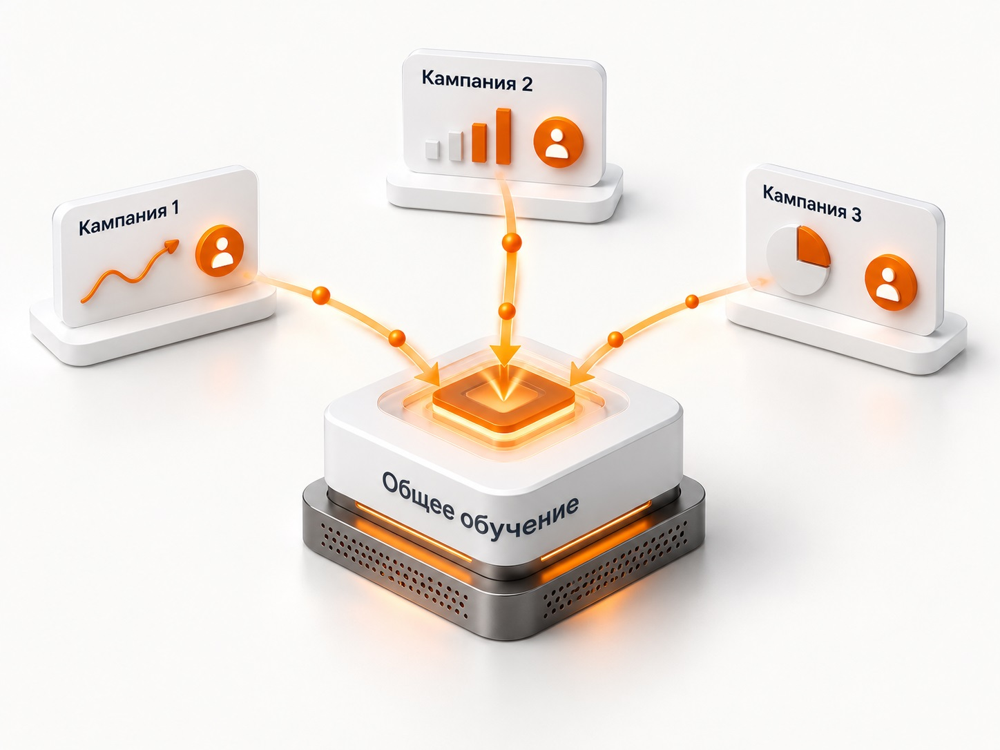

Блог о платном трафике
Пакетная стратегия Яндекс Директ: как работает и когда использовать
Что такое пакетная стратегия в Яндекс Директе, как объединяется обучение нескольких кампаний, когда это может помочь и почему пакет не гарантирует улучшения результатов.
Пакетная стратегия в Яндекс Директе позволяет объединить несколько рекламных кампаний под одной автоматической стратегией. Главное преимущество такого подхода - кампании используют общие данные для обучения.
Условно это можно назвать «коллективным разумом». Если отдельно каждой кампании не хватает конверсий для стабильного обучения, их можно объединить и дать алгоритму больше статистики в сумме.

Сам Яндекс прямо указывает, что пакетная стратегия предназначена в том числе для решения проблемы нехватки конверсий. Конверсии, полученные внутри пакета, используются для обучения всех добавленных в него кампаний. Официальный ориентир - не менее 10 конверсий в неделю суммарно по пакету.
Но я бы не воспринимал пакетную стратегию как способ автоматически исправить плохо работающую рекламу. На практике это скорее гипотеза, которую имеет смысл проверять в определенных ситуациях.
Что такое пакетная стратегия
Обычная автоматическая стратегия работает в рамках одной рекламной кампании. Она получает клики, конверсии и другие сигналы, а затем на основании этих данных управляет ставками.
У пакетной стратегии уровень выше: к ней подключается сразу несколько кампаний одного типа, а основные параметры стратегии становятся общими.
Например, есть три отдельные кампании:
- Поиск по одной группе товаров;
- Поиск по второй группе товаров;
- отдельная кампания для еще одного направления.
Допустим, первая получает 3 конверсии в неделю, вторая - 4, третья - 5. Каждой по отдельности статистики мало. Вместе получается уже 12 конверсий.
После объединения алгоритм получает данные всех трех кампаний в рамках одной пакетной стратегии. Это не означает, что реклама обязательно станет эффективнее, но данных для обучения становится больше.
Подробнее о том, почему количество событий влияет на работу алгоритмов, я разбирал в статье «Обучение стратегии в Яндекс Директе».
Как работает обучение пакетной стратегии
В обычной ситуации каждая кампания фактически накапливает свою статистику. Если структура аккаунта сильно раздроблена, конверсии тоже распределяются между большим количеством кампаний.
Получается проблема: суммарно реклама может приносить достаточно заявок, но каждая отдельная кампания получает их слишком мало.
Пакетная стратегия позволяет собрать эти сигналы вместе.
Например:
Кампания 1 - 3 конверсии за неделю
Кампания 2 - 4 конверсии за неделю
Кампания 3 - 5 конверсий за неделю
Всего в пакете - 12 конверсий
Яндекс указывает минимум 10 конверсий в неделю в сумме по кампаниям как ориентир для лучшей оптимизации пакетной стратегии.
Именно здесь пакет может оказаться полезнее нескольких независимо обучающихся стратегий.
При этом сами кампании не превращаются в одну кампанию. Их структура, объявления, таргетинги и статистика остаются отдельными. Общим становится уровень управления стратегией.
Когда пакетную стратегию есть смысл использовать
Я в первую очередь рассматривал бы ее в ситуации, когда есть несколько небольших кампаний, которые решают близкие задачи, но каждой из них отдельно не хватает конверсий.
Характерный пример - рекламный аккаунт сильно разделен по направлениям, регионам, посадочным страницам или местам показа. Такая структура может быть оправдана с точки зрения управления рекламой, но статистика оказывается раздроблена.
Вместо того чтобы физически объединять все в одну кампанию, можно проверить пакетную стратегию.
Еще один сценарий - добавление новой кампании к уже обученному пакету. В справке Яндекса прямо указано, что новая кампания в таком случае может быстрее выйти на заданные показатели оптимизации, поскольку пакет уже располагает накопленными данными.
Пакет также подходит, когда нужен один общий бюджет на несколько кампаний. Алгоритм сам распределяет его между ними с учетом эффективности.
Это удобно, если не требуется жестко закреплять отдельную сумму за каждой рекламной кампанией.
О выборе самих автоматических стратегий подробнее написано в статье «Какую стратегию выбрать в Яндекс Директ».
Как распределяется бюджет между кампаниями
У пакетной стратегии бюджет задается сразу на весь пакет.
Дальше Яндекс распределяет расходы между входящими в него кампаниями в зависимости от их эффективности. Это принципиальное отличие от ситуации, когда у каждой кампании есть собственный независимый недельный бюджет.
Если одна из кампаний приносит конверсии хуже или заметно дороже остальных, алгоритм может постепенно снижать для нее ставки.
По официальной документации полностью отключать такую кампанию система не обязана. Она может продолжить работу на минимальных ставках.
Поэтому пакетная стратегия может менять распределение трафика довольно заметно.
Если бизнесу нужно гарантированно тратить определенный бюджет на каждое направление независимо от его текущего CPA, объединение в пакет может оказаться неудобным.
Когда пакетная стратегия может не помочь
Основная ошибка - считать, что достаточно объединить несколько плохо работающих кампаний и они начнут обучать друг друга.
Если данных мало вообще, объединять практически нечего.
Например, три кампании дают по одной конверсии в неделю. После объединения получится три события. Проблема недостатка статистики останется.
Не поможет пакет и в том случае, если алгоритму передаются неправильные цели. Если кампании оптимизируются по просмотрам страниц или другим действиям, которые слабо связаны с реальными заявками и продажами, увеличение количества таких сигналов не делает их качественнее.
Я бы осторожно объединял и кампании с сильно различающейся экономикой.
Допустим, для одного направления нормальная заявка стоит 2 000 рублей, а для другого - 15 000 рублей. У них могут различаться маржинальность, ценность клиента и допустимая стоимость привлечения. Просто собрать все в один пакет ради количества конверсий здесь может быть не лучшим решением.
Сначала стоит проверить саму структуру кампаний, цели и ограничения. Слишком сильное дробление рекламы тоже часто становится причиной недостатка данных. Этот вопрос подробнее разобран в статье «Настройка Яндекс Директ».
Пакетная стратегия не должна быть способом искусственно набрать конверсии
Само число конверсий не является целью рекламы.
Можно выбрать более простое действие, быстро получить десятки событий и формально дать алгоритму много статистики. Но если это действие плохо связано с заявкой или покупкой, обучаться система будет на неправильном сигнале.
То же относится к пакетам.
Лучше иметь меньше качественных конверсий, чем большое количество событий, которые не отражают реальную задачу бизнеса.
Поэтому я сначала смотрю, по какой цели происходит оптимизация и насколько она связана с продажами. Только после этого имеет смысл решать проблему количества данных.
Как создать пакетную стратегию в Яндекс Директе
В актуальном интерфейсе пакет создается через раздел «Библиотека» -> «Пакетные стратегии».
Дальше нужно:
- Создать новую пакетную стратегию и задать ей название.
- Выбрать тип стратегии и ее параметры.
- Настроить цели, ограничения и бюджет.
- Добавить подходящие рекламные кампании.
Сейчас пакетные стратегии поддерживают «Максимум кликов», «Максимум конверсий» и «Максимум прибыли». В одну пакетную стратегию можно добавить до 100 кампаний одного типа. Для ЕПК пакетные стратегии доступны, кроме кампаний с показами в мессенджерах и кампаний для продвижения приложений.
Недельный бюджет при настройке нужно рассчитывать сразу на весь пакет, а не на одну кампанию.
Что произойдет с уже работающей кампанией
Подключение существующей кампании к пакету меняет используемую для нее стратегию, поэтому после перехода результаты могут измениться.
При этом по актуальной справке Яндекса накопленные ранее данные обучения сохраняются в системе и продолжают учитываться при управлении ставками этой кампании. Если пакетная стратегия создается на базе уже работающей обычной стратегии, у исходной кампании также сохраняется накопленная статистика.
Поэтому старую кампанию с хорошей историей не нужно автоматически считать полностью «обнуленной» после создания пакета.
Но менять стратегию только ради эксперимента без необходимости я бы тоже не стал. Любое серьезное изменение алгоритмического управления рекламой нужно оценивать по результату, а не по самому факту появления нового инструмента.
Пакетная стратегия - это гипотеза, а не обязательная настройка
Я бы использовал пакетную стратегию прежде всего как тест, когда отдельно взятым кампаниям явно не хватает данных, но суммарно по нескольким близким кампаниям конверсий уже достаточно.
Логика простая:
несколько кампаний плохо обучаются отдельно -> объединяем данные -> проверяем, станет ли общая стратегия работать стабильнее.
Это вполне разумная гипотеза. Но гарантии здесь нет.
Иногда пакет действительно позволяет алгоритму получить больше данных и лучше распределить бюджет. Иногда существенного улучшения не происходит. А иногда выясняется, что проблема вообще была не в количестве конверсий, а в трафике, целях, ограничениях, сайте или самом предложении.
Поэтому оценивать пакетную стратегию нужно по фактическому CPA, количеству качественных конверсий, продажам и экономике рекламы.
Сам по себе статус «пакетная» ничего не улучшает. Ценность инструмента появляется только тогда, когда объединение данных действительно решает конкретную проблему рекламных кампаний.